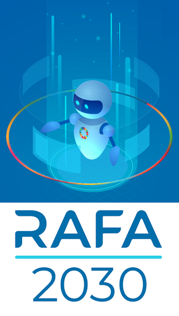

Documentação
RAFA 2030
1 Introdução
A iniciativa RAFA 2030 é parte do projeto Agenda 2030 no STF, idealizado pela gestão do Ministro Luiz Fux. O objetivo maior do projeto é internalizar a Agenda 2030 da ONU no dia a dia da corte, de forma a torná-la uma referência prática para decisões em nível tático e estratégico. A Agenda 2030 busca melhorar a vida de todos os habitantes do planeta e é resultado de amplas discussões entre os países membros da ONU. Etiquetar processos judiciais de acordo com Objetivos de Desenvolvimento Sustentável (ODS) da Agenda 2030 da ONU é um importante passo para incluir a própria Agenda no cotidiano do tribunal, uma vez que tais ODS são citados em votos dos Ministros e podem, no futuro, gerar precedência para temas de maior impacto social. Os gestores do projeto Agenda 2030 no STF, então, perceberam que o desenvolvimento de uma ferramenta computacional para auxílio na classificação de processos em ODS seria de grande utilidade para os setores que tratam da autuação e acervo do tribunal, pois tal tarefa é realizada de forma manual atualmente. A iniciativa RAFA surgiu neste contexto, em outubro de 2020, inicialmente como um contador de palavras-chave em processos candidatos a receber etiquetas de ODS da Agenda 2030 da ONU.
Ao longo do tempo, a iniciativa ganhou corpo e cresceu em funcionalidades. Atualmente, a RAFA se concentra em duas tarefas específicas relacionadas à classificação de processos em ODS da Agenda 2030: classificação automática de grandes conjuntos (lotes) de processos judiciais via aprendizagem de máquina e deep learning e apoio visual e estatístico para classificação individual de processos judiciais. Ambas estão em período de testes atualmente e contam com a curadoria de servidores da área jurídica. A primeira tarefa consiste em utilizar algoritmos de aprendizagem de máquina e deep learning para classificar automaticamente lotes de processos judiciais em ODS da Agenda 2030. O fluxo em si é bastante simples. A área jurídica do tribunal indica conjuntos de peças jurídicas - que podem ser os processos autuados mais recentemente, por exemplo - e a RAFA utiliza textos já etiquetados para treinar e etiquetar as novas entradas. A entrega, neste caso, são as classificações que resultam dos algoritmos ajustados. A segunda tarefa é centrada no desenvolvimento de um aplicativo para apoiar a decisão de classificar uma nova entrada (processo) em ODS da Agenda 2030. Este app conta com diversos gráficos utilizados em processamento de linguagem natural (NLP), além de contagem de palavras-chave e busca de determinadas palavras e leis no contexto da peça jurídica. A entrega, neste caso, é a possibilidade de ajudar o servidor a classificar mais processos jurídicos em menos tempo e com maior qualidade.
Apresentar os aspectos técnicos da RAFA em suas duas frentes (classificação automática e app) é o objetivo desta documentação, que não se dedica a apresentar apenas as ideias que hoje compõem a ferramenta. Todo o fluxo de desenvolvimento da RAFA será apresentado, incluindo as ideias que não se mostraram as melhores em termos de performance e sequer entraram nos módulos que hoje estão em teste. De maneira mais clara, todas as estratégias e algoritmos utilizados serão apresentadas na documentação, alguns com extratos de código e outros apenas com registros e referências de implementação. O objetivo não é tornar a documentação excessivamente longa, mas ajudar de maneira geral. O que deu errado para RAFA pode ser decisivo na resolução de problemas de NLP em outros tribunais. Um projeto em linguagem R e um notebook em Python serão disponibilizados com referências, gráficos, códigos e exemplos de imediata aplicação. Críticas à iniciativa e à organização desta documentação são bem vindas e devem ser enviadas para sge@stf.jus.br. A presente documentação não é estática e será necessariamente aumentada e revisada conforme novos módulos da RAFA sejam feitos.